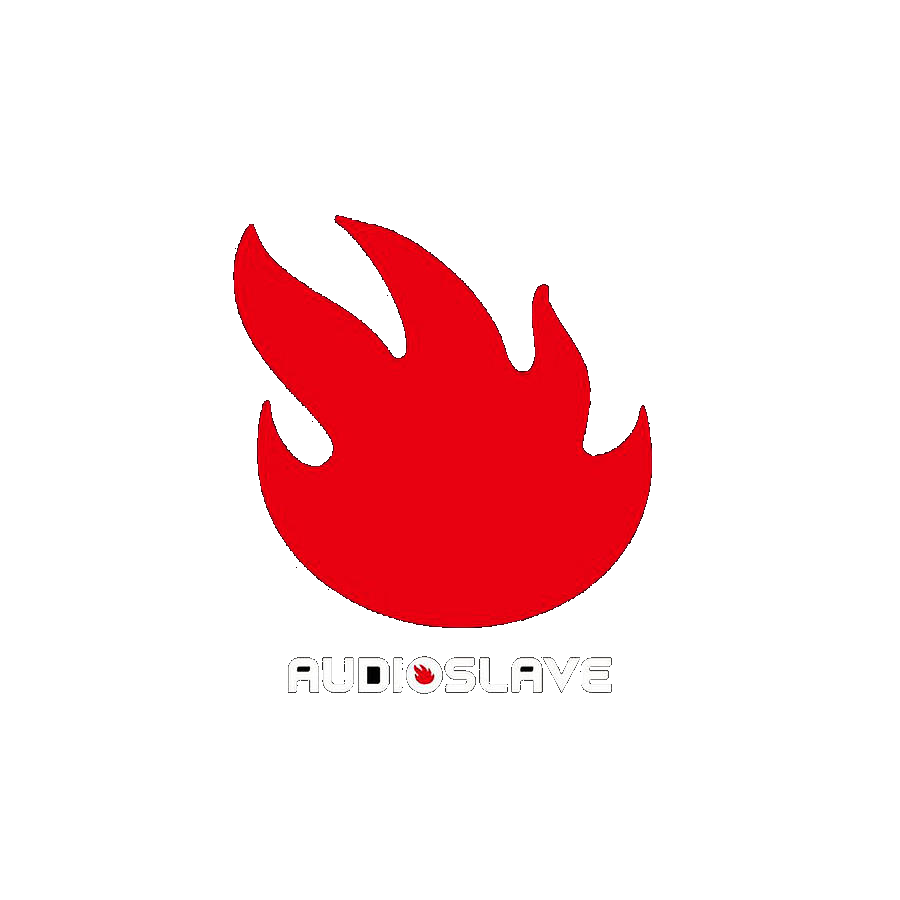

Audioslave
Audioslave was an American alternative rock supergroup formed in Los Angeles, California, in 2001 by Soundgarden vocalist Chris Cornell and the instrumental section of Rage Against the Machine: Tom Morello (guitar), Tim Commerford (bass and backing vocals) and Brad Wilk (drums). At first, critics described Audioslave's sound as a mix of Soundgarden and Rage Against the Machine, although after their second album, Out of Exile, the press recognized that the band had managed to establish their own identity. The band's typical sound was created by fusing the hard rock of the 1970s with the alternative rock of the 1990s.